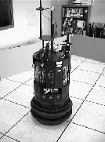
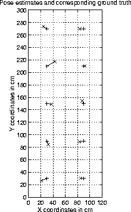

Figure 6.12 depicts Scene III, as
observed by a camera mounted on a Nomad 200 mobile robot
(Figure 6.13) in an indoor
setting. In this experiment, the robot faces in a fixed orientation
and training images are collected at 20cm intervals over a 1.2m by
3.0m grid. In addition, 10 test images are taken at regular intervals
over a set of positions lying between the grid points. In the case of
this experiment, the robot's dead reckoning sensors were used to
move it into position, followed by an adjustment which was performed
by using a joystick. This led to very poor ground truth estimates,
accurate only to about 3cm. In addition, the orientation of the
camera was not guaranteed to be perfectly aligned. Finally, the raised
floor in the lab was composed of tiles which were not always
guaranteed to be flat and/or level. All of these factors, as well as a
 which is ten times larger than in the previous scenes, pose
serious difficulties for reliable tracking and pose estimation.
which is ten times larger than in the previous scenes, pose
serious difficulties for reliable tracking and pose estimation.

Figure 6.13: The Nomad 200.
Figure 6.14 depicts the results for the ten test images. The mean error is 6.7cm, or 33% of the sample spacing, and comparable with the accuracy of the ground truth measurements. The quality of these results indicates that in spite of several problematic factors, implementation in a useful operating environment is possible.

Figure 6.14: Results for Scene III. The mean
estimation error is 6.7cm.